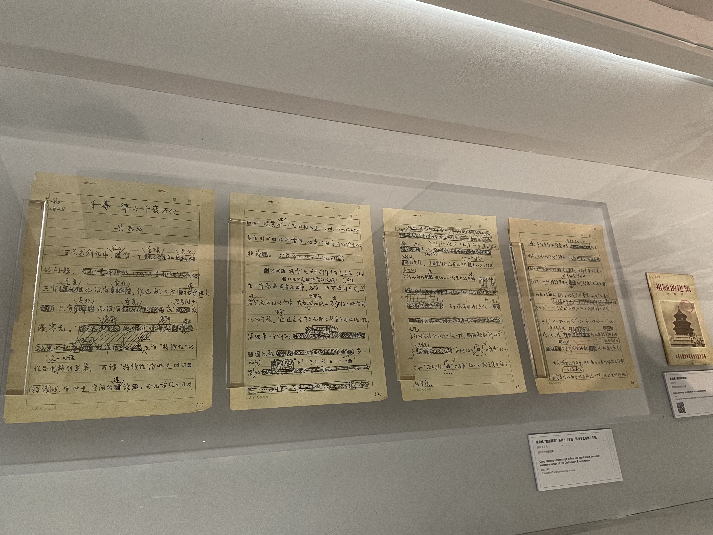
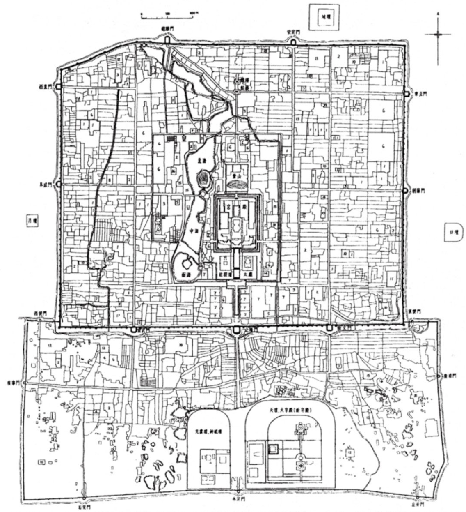

认识梁思成和中国建筑史
2021年是梁思成先生诞辰120周年（1901-1972），清华建筑学院在艺术博物馆策划了一场名为「栋梁」的展览。在踏入展厅前，我绝对低估了它会对我的影响。
这么说吧，这场展因为大受好评，所以延期过两次，每次延期我都会再去看，一共是去了三次。看完展览后读了《拙匠随笔》和《梁》两本梁先生文集，也跟着考察路线去山西见识了大同古城和应县木塔。当然这些都是过程，其结果是——我第一次开始对城市和建筑产生兴趣，有意识地观察城市如今什么样，怎么运作的，历史是什么样，怎么变成如今的样子的。我对自己生活的土地，看似那么熟悉，却又那么陌生。
展览¶
栋梁¶
栋梁不会把自我牺牲看做牺牲，栋梁的心胸使得压力变成了快乐，栋梁的快乐可以感染整座建筑。用先生自己的词汇，做一个严谨而快乐的拙匠。
第一次参观，对建筑知之甚少，印象深刻的主要是通俗易懂或视觉丰富的部分，比如梁思成的生平，宛如印刷出来的手稿和测绘，还有他的几篇散文，用非建筑专业的人能听懂的话，讲述建筑的精髓，这些文章被收录在《拙匠随笔》这本书里。
比如，《什么是建筑》写到，建筑 = 适用 + 框架 + 美感，建筑学= 社会科学 + 技术科学 + 美学，这是先生从数千年建筑史中总结出来的规律，却也同样可以用来思考建筑以外的领域，对我而言是产品，相信各行各业的人都能从中有所联想。还有 《建筑与音乐》、《重复与变化》这几篇文章，都给人一种大道至简的感觉，对内容创作和生活

《千篇一律与千变万化》手稿
在读完《拙匠随笔》这本书后，我便第二次参观栋梁展。这次对中国木质建筑和《营造法式》的内容有了一定的了解，注意力便更多转移到建筑身上，如应县木塔、山西五台山佛光寺、蓟州独乐寺、赵州桥等。
在展览的最后一天（2022.05.05）三刷了栋梁，见证了这场两次延期、历时八个月的展览的结束。本想简单走马观花地逛一圈，结果刚好赶上一场讲解，志愿者是一名水利系的退休教授，他对梁先生的事迹如数家珍，娓娓道来。完整的故事线、再配上老一辈人的气质，以及关键转折点故意预留的悬念，给我一种来到了《档案》现场的感觉。在这两个小时的讲解里，我多次惊讶和叹息，感觉讲解员用情至深的时候眼睛也有闪烁。
要说印象最深刻的，就是收获了新的非线性的视角。自己观赏视角总是线性的，跟着布展人的思路一路沿着时间线走下来。而讲解人的视角是跳跃的，即将这条时间线上的关键点进行归类，是另一种独特且合理的视角。他将梁思成的生平归类为“7个2”：2个学校（清华、宾大），2本著作（营造法式注释、中国建筑师）、2段婚姻（林徽因、林洙）、2个方案（梁陈方案、国徽方案）、2个孩子（梁再冰、梁从诫）、2段重要经历（古建筑考察、城市规划）。讲这段话的时候，他的指尖就在这条L型时间轴上跳跃，勾画出一幅新的画面。
旅行¶
这次旅行是为了走梁先生走过的路，亲眼看看栋梁展里测绘手稿和照片中的的真实景象，只想说不虚此行，谢谢山西把古建筑保护得这么好。这一路上见到很多古建筑，看它们的坚实的斗拱、高大的佛像，漂亮的装饰，也听闻了背后的历史故事。
行程¶
- Day1: 北京北，大同南，华严寺，九龙壁，云冈石窟，古城墙
- Day2: 应县木塔，净土寺，中国雕塑博物馆，梁思成纪念馆，大同南，北京北
古城墙¶
在大同古城墙上夜骑，仿佛看到了在北京鼓楼上看到的中轴线，仿佛体会到了《梁陈方案》里所提到的——保留城墙作为居民日常生活娱乐的场所。在大同城墙之上骑行一周，全长共 7.3 公里，用了快 50 分钟，而北京城墙在全盛时期长达24公里（这还是因为明朝预算不足所以外城只修了一半）。我克制不住地幻想，如果能城墙保留下来，那北京绝对就是另一种风貌。但是大同和北京在如今的中国毕竟扮演着截然不同的角色，城墙的拆除，是否是北京作为首都——首先是政治经济然后才是文化中心——所交的税呢？还是说，这税本身可以不交，只是因为当时人们陈规守旧的观点（比如行政区要像历朝历代一样建在中心，或者苏联就是这样做了），和非黑即白的论调（比如另建新城就是不切世界的理想主义），而导致的智商税呢？
城墙上面，平均宽度约10米以上，可以砌花池，栽植丁香、蔷薇一类的灌木，或铺些草地，种植草花，再安放些园椅。夏季黄昏，可供数十万人的纳凉游息。秋高气爽的时节，登高远眺，俯视全城，西北苍苍的西山，东南无际的平原，居住于城市的人民可以这样接近大自然，胸襟壮阔。还有城楼角楼等可以辟为陈列馆，阅览室，茶点铺。这样一带环城的文娱圈，环城立体公园，是全世界独一无二的。——梁思成《关于北京城墙废弃问题的讨论》

清代北京城凸字形平面图（乾隆时期）
梁思成纪念馆¶
在梁思成纪念馆，也有记录梁先生一生的主要事迹，分为求学、测绘、城市规划、教育等阶段。虽资料丰富度远不及栋梁展，但是着重展开了梁先生在大同以及山西的考察工作，还有梁思成对于这座城市的影响。印象最为深刻的是，大同这座历史名城正是以《梁陈方案》为指导而进行整体规划的，即尽量保留古城原貌，再划新区开发现代化城市。这样来看，前一日在古城墙上骑行时恍惚的感觉便也不足为奇了。
游览的时候，我特意播放了梁先生喜欢的鳟鱼五重奏。梁先生认为音乐和建筑很像——都能在重复与变化中给人带来美的享受。
应县木塔¶
应县木塔，独一无二的木构塔，与法国埃菲尔铁塔，意大利比萨斜塔并称世界三大奇塔。建成于北魏时期公元1056年，距今已经有966年历史了，期间经历过40多次地震和战乱都没有倒，实在是古人充满智慧的杰作。塔身为八角形，共五层楼，可惜只开放第一层，2-5层似乎因为承重被破坏，已经开始倾斜了。木塔周围的飞鸟是麻雀，因为木塔会生虫。
虽然来之前看过很多次梁先生当年对木塔的手绘图和照片，但究竟不如亲眼所见来得震撼。应县，在木塔内外是两种景象：一个略显偏僻落后的小县城里居然有如此宏伟的建筑，给人一种不太真实的错乱感。
此外隐藏很深的净土寺也值得一看，虽然只剩下单层的大雄宝殿，但是里面有精巧的天宫楼阁藻井，还有两头辽代“披头散发“的小石狮子。若非当时刚好在听播客怪物尚志两年前一期游应县的节目，我可能就不会在尘土飞扬的小村子里找到净土寺，也不会主动要求看门的保安为我开锁进去观看了。
这便引出下一个话题：我似乎找到了独自旅行的新的打开方式——到一个地方搜搜有没有讲这个地方的播客。这样有两点好处，一是不费眼睛，走路坐车都可以听；二是相比官方的教科书式的讲解，或多了自己的亲身经历和感受，或融入了更多历史地理文化相关的背景，总之多一个很懂的人和你讲话，不知不觉间就加深了对当地的理解和连接。
云冈石窟¶
云冈石窟位于大同西的武州山和武州川，大部分都是北魏时建的。一共有45个洞窟，按照顺序自东向西编号。16-20是早期石窟，也称昙耀五窟，最有标志性的应该就是第20窟，因为三座佛都暴露在外面（因为外面的石头掉了），雕塑和壁画是具有中国特色的石窟艺术，很多中西方结合的元素。
除了石窟，整个景区的设计也很人性化—在入口处有一间免费的观影房，里面会循环播放介绍石窟的彩色纪录片，让游客在正式浏览前有所了解，同时这个纪录片的声音是外放的，在入口周围都能听到，这样可以吸引更多的游客来观看，同时避免正式浏览时造成打扰。
在路上¶
北京到大同很近，高铁不到两个小时。仅仅是在高铁上看到窗外的平原和层峦叠嶂，就足以让我这个久居城市的人感觉到渺小和释怀了。
- 吃：顺意凉粉（推荐，一碗才8元），喜晋道刀削面（推荐），喜晋道·味庄（推荐，当地特色）
- 住：大同达旦酒店（推荐，装修很漂亮，也经营书店和咖啡，选书的品味很好，住客可以借两本到房间免费看）
- 开销：1000元（高铁+打车+住宿+吃饭+门票）